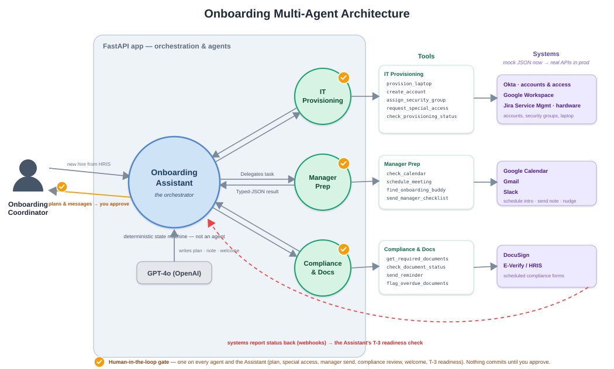
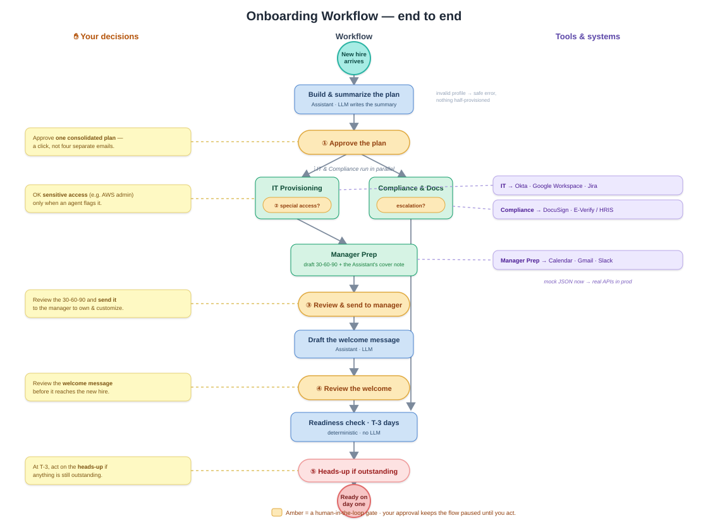

For the technical walkthrough
How it's built
Four specialized agents named after HR functions, coordinated by a deterministic orchestrator, with human approval at the high-judgment moments. Integrations are mocked on purpose — the IP is the agent design and the typed handoffs, not the plumbing.

System architecture — four agents, one orchestrator, mock integrations as JSON.

End-to-end workflow — every gate, conditional path, and parallel branch.

Coordinator touchpoints over time — a few decisions, not fifty emails.
Design principles
- The orchestrator is a state machine, not an agent. Routing is a rule, not a judgment — so it stays deterministic. That's the answer to "why agents at all?"
- Agents reason, tools execute. Deterministic facts and actions live in tools; genuine judgment lives in agents.
- Handoffs are typed JSON contracts. Pydantic catches hallucinations and schema mismatches at the boundary.
- Human-in-the-loop at judgment moments. Five decision gates + one alert — placed where judgment is needed, not at mechanical steps.
- Grounding stops hallucination. Each agent gets the real catalog for the hire, so it reasons over facts.
- Tested without calling the LLM. Agents are dependency-injected, so routing tests run against deterministic fakes.
Stack
OpenAI Agents SDK (Python)GPT-4oPydantic — typed contracts
Python state machinepytest · 28 testsMock data as JSON
Mockup · diagrams are the live project diagrams from docs/diagrams/.